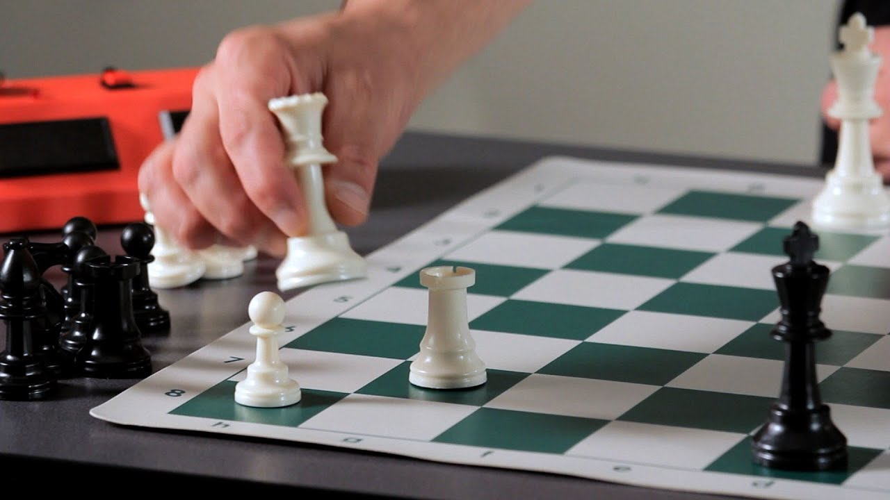
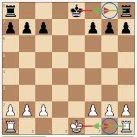
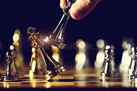

Chess Project¶
{kind=link}
More about chess¶
Chess is one of the most, if not the most popular and well-known among board games all over the world, being considered a strategy and intelligence game, and a good player must already advance what the moves his opponent will make. | Chess is played on a board of 64 squares arranged in eight vertical rows called files and eight horizontal rows called ranks. These squares alternate between two colours: white and black. The board is set between the two opponents.
Chess Moves¶
- King can move exactly one square horizontally, vertically, or diagonally. At most once in every game, each king is allowed to make a special move, known as castling.
- Queen can move any number of vacant squares diagonally, horizontally, or vertically.
- Rook can move any number of vacant squares vertically or horizontally. It also is moved while castling.
- Bishop can move any number of vacant squares in any diagonal direction.
- Knight can only move in L. format. This means that you can only walk two houses forward and one to the side at each move.
- Pawns are unusual because they move and capture in different ways: they move forward, but capture diagonally. Pawns can only move forward one square at a time, except for their very first move where they can move forward two squares.
Pawn Promotion¶
{kind=link}
If a pawn reaches the opposite side of the board, it is promoted to a higher piece (except king). There is no limit to how many pawns can be promoted.
Castling¶
Castling is the only move that allows two pieces to move during the same turn. During castling a king moves two spaces towards the rook that it will castle with, and the rook jumps to the other side.
Checkmate¶
Putting an opponent’s king in “checkmate” is the only way to win the game. A king is in checkmate if it is in check, the opponent’s piece that has the king in check cannot be captured, the check cannot be blocked, and the king cannot move to a square that is not under attack.
PGN notation¶
PGN is “Portable Game Notation”, a standard designed for the representation of chess game data using ASCII text files. PGN is structured for easy reading and writing by human users and for easy parsing and generation by computer programs.
Note
FEN notation¶
FEN is “Forsyth-Edwards Notation”; it is a standard for describing chess positions using the ASCII character set. A single FEN record uses one text line of variable length composed of six data fields. The first four fields of the FEN specification are the same as the first four fields of the EPD specification. A text file composed exclusively of FEN data records should have a file name with the suffix “.fen”.
Here is what an FEN string looks like for the initial setup of the board:
- rnbqkbnr/pppppppp/8/8/8/8/PPPPPPPP/RNBQKBNR w KQkq - 0 1
Here is what it looks like if 1. e4 is played:
- rnbqkbnr/pppppppp/8/8/4P3/8/PPPP1PPP/RNBQKBNR b KQkq e3 0 1
And here is what it looks like at the final position in the PGN string I provided above:
- 5k2/ppp5/4P3/3R3p/6P1/1K2Nr2/PP3P2/8 b - - 1 32
My Approach¶
Contents: